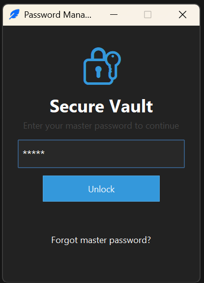
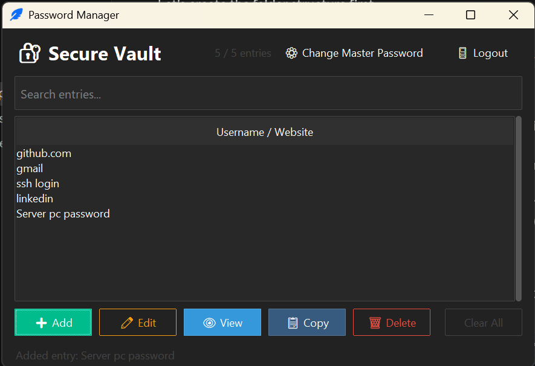
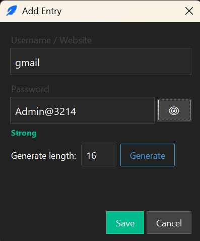
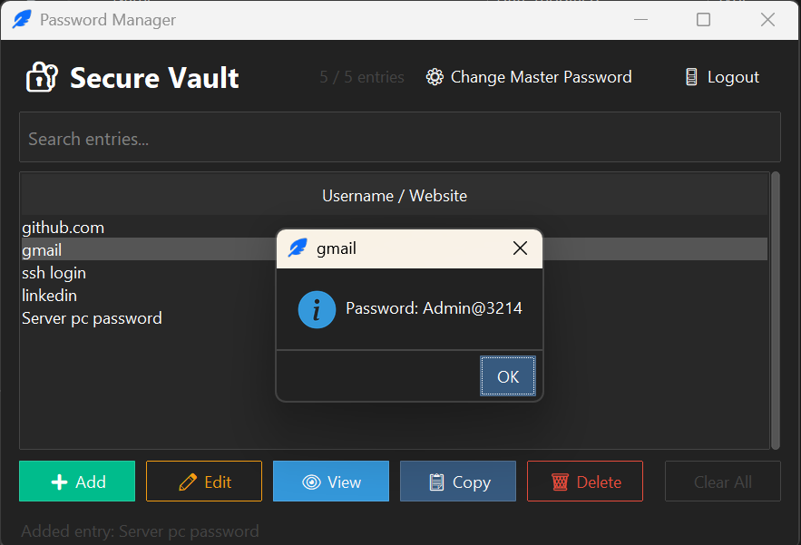
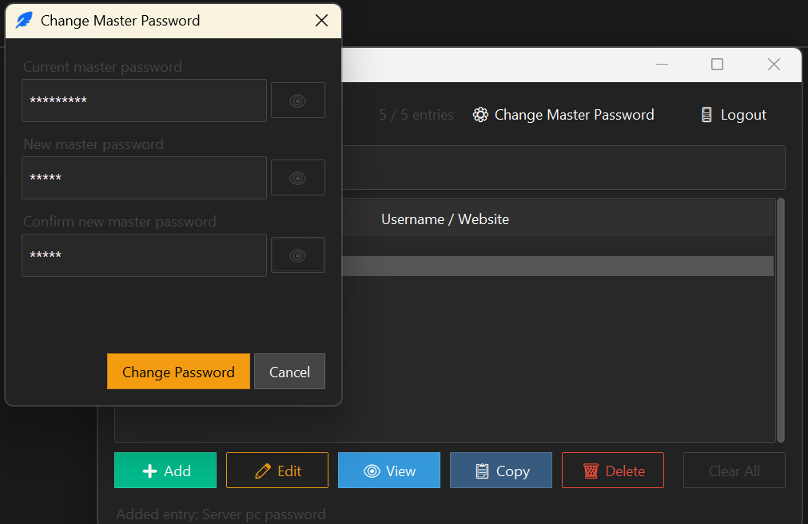
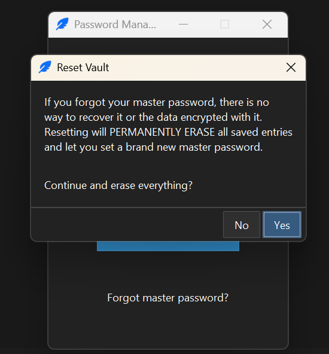

PBKDF2-derived keys, Fernet encryption, and a canary-based password check — wrapped in both a terminal interface and a themed desktop app. No servers, no accounts, no cloud sync: your vault never leaves your machine.
Every feature exists because of a specific security or usability decision — not just to check a box.
One password unlocks the vault. Nothing is ever stored in plaintext — not even the key itself.
390,000 iterations of PBKDF2-HMAC-SHA256 turn your password + a random salt into the encryption key.
Every entry is individually encrypted with AES-128-CBC + HMAC via the cryptography library's Fernet spec.
A canary value is checked at login, so a wrong master password is caught immediately — not three entries deep.
Passwords are generated with Python's secrets module, not random — with a live strength meter in the GUI.
Add, edit, view, copy, delete, and search entries — plus clear the whole vault when you need a clean slate.
Re-encrypts every stored entry under a brand new key after verifying the current password.
Lock the vault without closing the app, or wipe everything and start over if the master password is truly lost.
CLI and GUI share the same encrypted vault files — pick whichever interface fits the moment.






Four steps, every time the vault is touched.
On first run, a random 16-byte salt is generated and stored in key.key.
Your master password + that salt are run through PBKDF2-HMAC-SHA256 (390,000 iterations) to derive a 256-bit key, base64-encoded for Fernet.
A canary value is encrypted with that key and stored in check.key — future logins decrypt it to verify the password before touching real data.
Each entry's password is individually encrypted with Fernet and stored as name|token in passwords.txt.
This protects data at rest: someone who steals passwords.txt, key.key,
and check.key without your master password cannot recover the stored passwords
(short of brute-forcing the master password itself).
It does not protect against keyloggers, memory scraping, or a compromised machine while the vault is unlocked. There is also no password recovery — the master password is the key, so losing it means the "Forgot master password" flow wipes the vault rather than recovering it.
This is a learning project exploring key derivation and symmetric encryption in Python — not a production-grade password manager. For real-world use, prefer an established tool (Bitwarden, 1Password, KeePass).
Everything runs locally — no account, no server, no data ever leaves your machine.
git clone https://github.com/Manojid/Password_Manager.git
cd Password_Manager
pip install -r requirements.txt# Command line
python Password_manager.py
# Desktop GUI
python Password_manager_gui.py